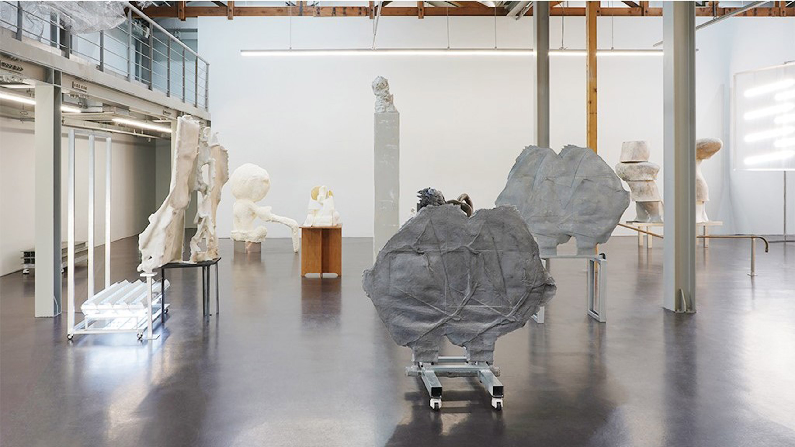
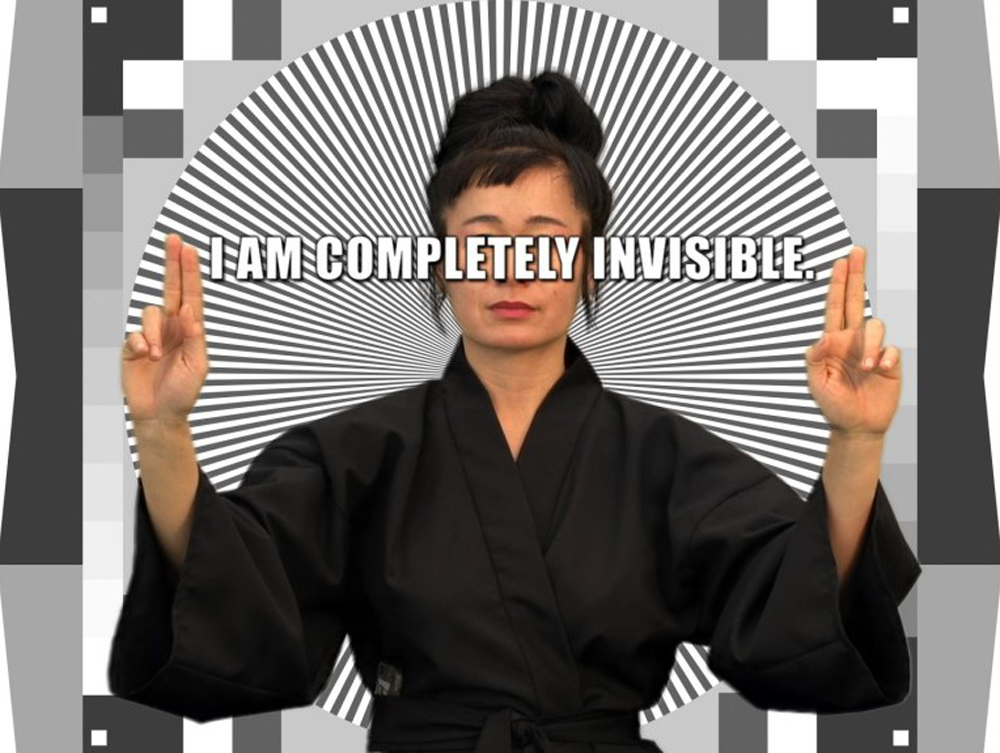
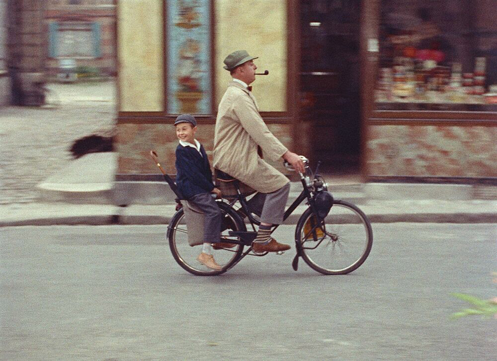
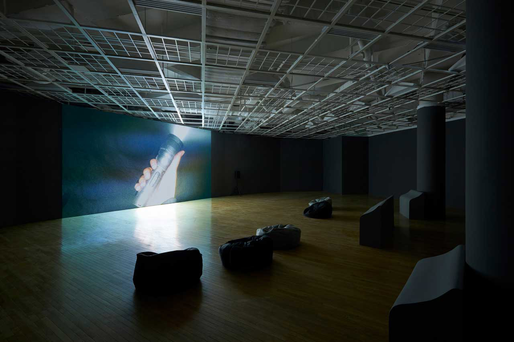

전시 보러 갈래? - 정지돈과 함께 1
<1. 홍승혜 개인전 《복선伏線을 넘어서 II》에 관하여
2. 개념과 이론, 그것들을 둘러싼 소문들에 관하여
3. 영상 작업에 관하여
1. 홍승혜 개인전 《복선伏線을 넘어서 II》에 관하여
승주: 전시 어떻게 보셨나요?
정지돈: 좋았습니다. 두 분은 어떠셨어요? 저는 두 분 얘기를 듣고 싶어요. 두 분 전공이기도 하고.
재훈: 저는 홍승혜! 할 때 가장 먼저 떠오르는 게 픽토그램 모양의 사람인데요. 비슷한 작품을 수서 궁마을 공원에 있는 Love Your Depot1에서 마지막으로 봤던 기억이 있어요. 거기에 홍승혜 작가 작품이 몇 개 보관돼있는데 그 중 (국제갤러리) K3 전시장에 있는 픽토그램 모양의 작품이 하나 있었거든요. 거기에 있는 작품은 키가 되게 작았어요.
그런데 오늘 K3 전시장에 들어가봤더니 똑같은 애들이 있는 거예요. 상체, 얼굴, 팔 모양은 다 똑같은데 얘네 다리가 길어졌네? 그 사이에 키가 컸나? 홍승혜가 이전까지는 포토샵으로만 작업하다가, 이번 전시에서는 일러스트레이터를 사용하기 시작했다고 들었는데 그런 점이 여기서 드러나는 건가 싶었어요.
승주: 그냥 다리만 짧은 거에요? 아니면 키 자체가 짧은 거에요?
재훈: 다리만 길어졌어요.
정지돈: 다리만 길어졌어요?
재훈: 네, 그래서 그동안 우유를 많이 마셨나? 싶었어요. 그리고 K1 공간에 구역이 두 개 있잖아요. 안쪽으로 들어가면 양쪽 벽에 작품들이 걸려 있는데, 입구쪽 작품들과 중앙에 있는 작품들 사이의 간격이 넓고, 그 반대 쪽 간격은 상대적으로 좁았거든요. 그게 되게 기억에 남아요.
정지돈: 전시 구성, 디피display에 대한 이야기네요. 간격이 달랐다는 건?
재훈: 네, 작품만 봤을 때는.. 홍승혜가 그동안 만들어온 작품세계에 대한 생각을 하지 않고 말한다면, 되게 아기가 한 거 같다고 느꼈어요. 이런 거랑 비슷한 거죠. (정지돈을 가리키며) 작가님께서도 초등학교 때 같은 반 친구들을 인물 삼아 소설을 썼다는 이야기를 인터뷰에서 종종 하셨잖아요. 저는 작가님이 등단하신 이후로 쓰신 글들이 초등학교 때 이야기를 지으셨던 방식과 재료가 다를 뿐이지 크게 다르지 않다고 생각하거든요. 그런 것처럼 작가의 접근 자체, 터치 자체는 그 사람이 예전부터 가지고 있는 성격personality에 기반한다고 생각하는데, 홍승혜도 마찬가지로 사용하는 매체가 달라졌다 뿐이지 선과 색을 활용한 만들기를 계속하고 있다고 느꼈어요.
그런 점에서 정서영 작가 역시도 본인이 1989년 석사 논문에서 밝힌 미학적 입장을 지금까지 고수하는 작가라고 생각해서, 하나의 입장을 정한 뒤 2,30년 동안 그걸 계속했을 때 느껴지는 설득력에 대해 생각해보기도 했고요. 그리고 무엇보다.. 무언가를 조물딱 조물딱 거리며 삶의 시간을 보내는 게 본인 스스로 재밌었을 것 같아요. 만들면서 재밌었겠다. 나도 내일 당장 중견 작가가 되고 싶다! (웃음)
정지돈: 빨리 나이 들어 안정된 작가가 되고 싶다는... (웃음) 네, 그렇죠. 왜냐하면 뭔가 성공하거나 성공하고 여유가 있지 않으면 그렇게 즐겁게 조물딱 조물딱 할 수 없을 테니까. 승주씨는 어떻게 보셨어요?
승주: 제가 볼 때는.. 작품이 층layer을 가진 조각이라기보다 디자인된 오브젝트라는 게 느껴지잖아요. 그래서 처음에 작가를 전혀 모르고 작업을 봤을 때는 ‘그냥 평면에 있던 걸 입체에 달았네? 근데 왜 굳이?’ 이런 식으로 단편적으로 생각했어요. 그 이후로 홍승혜에 대해 생각하지 않다가 이 토크를 준비하면서 작가에 관한 자료를 찾아봤는데요. 그 분이 앵포르멜 회화에서 지금 형상의 입체 작업물을 걸기까지의 과정들을 알고 나니까 그냥 걔네가 좋아 보이더라고요.
정지돈: 음~
승주: 그렇게 단순하게 그 사람의 과정을 팔로우follow했을 뿐인데 왜 애정이 생길까? 해서
재훈: 무언가를 팔로우하는 것만으로 그 뭔가가 좋아 보인다는 점이 인상적이네요.
승주: 그 작가에 대한 정보값이 높아졌다는 이유만으로 과거랑 감상이 달라졌다? ㅎㅎ 너무 단순하긴 한데 저는 그랬어요.
정지돈: 이게 두 분 얘기랑 이어지는지 모르겠는데, 두 분 이야기를 다 들으면서 생각난 게 있어요... (잠시 멈춤) 옛날에 회화 작업하셨을 때는 어땠는지 저도 정확히는 모르겠는데, 지금 홍승혜의 작업은 기본적으로 한 90년대 후반부터 우리가 컴퓨터를 사용하면서 만들어진 거잖아요. 두 분은 홍승혜가 사용하는 매체가 컴퓨터라는 것에 대해서는 크게 관심이 없나요?
재훈: 홍승혜가 1990년대에 교수로 임용되고 나서 얼마 후 학교에서 받은 컴퓨터로 시작한 게 픽셀 작업이라고 알고 있는데요. 업무 처리하라고 준 컴퓨터로 딴짓하다가 발견한 형식form으로 작품세계를 이루고, 그때부터 지금까지 유사한 형식으로 작품을 만들고 있다는 것 자체가 인상적이었어요. 아, 이렇게 해도 되는구나.
승주: 그 분이 초기부터 컴퓨터 프로그램을 썼다는 사실을 디폴트 값으로 두고 전시에 접근하니까 어느 순간부터 그 점을 크게 고려하고서 보진 않았던 것 같아요.
정지돈: 그렇죠. 요즘은 그럴 필요도 없고요. 저는 이번에 K3에 있는 사운드 작업을 듣고서, 전에 봤던 홍승혜의 퍼포먼스 작업2이 기억났어요. 플랫폼엘Platform L에서 3명의 작가가 퍼포먼스를 보여주고 그 퍼포먼스를 그 자리에서 바로 nft로 만들어서 쉬는 시간에 구매하게 하는 내용의 전시였는데요.. 첫 번째 순서가 권오상 작가였고, 두 번째가... 이름이 생각 안 난다.
승주: 그 은색 조각 맞죠? 강재원 작가?
정지돈: 맞았던 것 같아요. 강재원의 퍼포먼스를 보면서 ‘이거 사람들이 좋아하겠다. 약간 잘 만들어진 아이돌 뮤비 같다.’ 고 생각했어요. 홍승혜의 퍼포먼스 작업도 재밌었어요. 겉으로 봤을 때는 평범한 20대 남녀들이 퍼포머로 와서 평범한 동작을 하는 퍼포먼스였거든요. 권오상의 퍼포먼스는 전문 무용수들이 퍼포머였어요. 국립현대무용단 출신이었나? 반면 홍승혜의 퍼포먼스는 평범한 옷을 입은 퍼포머들이 조금 귀여운 움직임을 하는 내용이었는데요. 이번 전시에서도 들어보면 음악이 약간 귀엽잖아요. 조각이 귀엽기도 하고. 그렇게 이런저런 오브제들을 목에 끼웠다가 빼기도 하고, 팔에 끼우기도 하고, 그런 식의 아주 사소한 동작들을 계속 하다가, 그 자리에서 오브제들을 쌓아 무언가를 만드는 일련의 과정을 보여줬어요. 유사한 도형들이 왔다 갔다 하는 영상도 포함되어 있었고요. 저는 그걸 보면서 ‘와, 이건 재밌다. 구조가 잘 되어있어서 그런지 되게 재밌네.’ 그런 인상이었는데 이번에 전시를 보고 두 분 얘기를 들으면서 이런 생각이 들었어요.
조금 오바하자면 홍승혜 작가님 작업이 처음에는 단순한 포토샵 디지털 이미지였는데 그게 평면에서 입체가 됐고, 그 입체 조형물이 이제는 움직이잖아요. 다시 말하면 사람이 디지털의 발전 과정에 따라 움직이는 거죠. 이걸 매체 이론, 매체 철학으로만 접근하자면, 우리(사람)가 매체를 도구로 사용해서 작품을 만드는 게 아니라 매체가 사람을 도구로 해서 작품을 만드는 거죠. 그 과정이 홍승혜 작가의 작품 세계에서 점점 구현되고 있는 거 아닌가 해요.
홍승혜가 회화라는 범위 안에서 작업을 하다가 컴퓨터를 다루면서 되게 단순한 작업으로 돌아갔잖아요. 이것 역시 디지털의 논리에 따라서 홍승혜가 움직인 거라고 볼 수 있죠. 물론 매체와 인간이 공진화하는 거고 서로 영향을 주고받는 거지만, 약간 과장해서 얘기하자면 이 디지털의 발전 과정, 최근에 화제인 인공지능과 마찬가지로 그런 디지털이라는 존재의 발전 과정에 따라서 우리가 변화하고 있는 것이고, 뒤집어서 생각해보자면 홍승혜가 디지털이라는 존재를 우리한테 매개해주는 매체의 역할을 맡고 있다고도 볼 수 있겠죠. 사람들조차, 퍼포먼스하는 사람들조차 그 입체 조형물과 영상이 가지고 있는 논리, 처음에 뿌려진 디지털 씨앗을 따라서 움직이게 됐으니까요. 그런 식으로 생각을 해봤어요. 재밌더라고요... (재훈을 가리키며) 왜 웃으세요? (웃음)
재훈: 방금 말씀하신 ‘디지털의 논리’라는 것에 대해 묻고 싶어요. 왜냐하면 저는 다르게 생각하거든요. 일단 첫번째, 홍승혜는 컴퓨터 안에서 만들기 시작한 픽셀 모양을 프린트하는 등의 방식을 사용해 미술에서의 평면 작업으로 출발하죠. 그리고 그걸 다시 입체로 바꾼 뒤 영상으로 바꾸는데, 저는 이게 그때그때 다른 재료를 선택해오는 과정이라고 생각했어요. 예를 들어서 입체를 영상으로 가져온다는 것은 조각의 문제가 아닌 영상의 문제를 떠안게 되는 일이고 어떤 이미지를 듀레이션duration이라는 작동 길이, 시간 속에 올려놓는 거잖아요? 시간을 재료로서 다루게 되는거죠. 저는 홍승혜가 처음에 픽셀 작업을 시작했을 때, 비약하자면 그 시대를 재료로 사용했다고 생각해요. 덩그러니 자신에게 주어진 그 시대의 매체 환경, 즉 컴퓨터를 재료로 사용한 거죠. 홍승혜는 자신이 대상 자체에 관심이 있는 게 아니라, 대상을 재현하는 방식에 관심이 있다고 계속 말해왔는데요. 그런 식으로 매체를 달리하면서, 선택하는 재료를 달리하면서
정지돈: 무슨 말을 하려는지 알 것 같은데...
재훈: 제가 생각하는 이 틀에서 작가님이 부각한 디지털은 전제로 있는 거죠. 제가 생각한 디지털의 역할은 굉장히 전제로 있고 기술로 있다. 이제 기술이라고 하니까 너무 구분 짓는 것 같은데, 이걸 가능하게 하는 매체로서... 그냥 있는 건데 디지털의 논리로 주장하신 내용은 기존에 작가님이 작업자로서 견지해온 관점이 그거라서, 그걸로 읽고 싶기 때문에 읽은 측면이 크다고 생각해요.
정지돈: 저는 그렇게 보는 걸 되게 좋아해요. 제가 그렇게 보는 걸 좋아하기 때문에 아까 말했듯이 약간 과장해서 그렇게 볼 수 있지 않을까 생각을 한 거고요. 그리고 저한테는 이런 게 더 재밌어요. 이를테면 홍승혜 자신이 매체를 선택했다고 하는 것보다, 매체라고 해야 되나? 처음에 홍승혜가 선택한 디지털이 자기 자체적으로 발전을 하면서 세상에 튀어나왔고, 이제는 오히려 디지털이 홍승혜를 이용한다고 보는 관점이 저한테는 더 재밌거든요. 근데 당연히 작가로서의 선택이 언제나 들어가고, 그 외 다른 요소들도 다 선택하죠. 그러니 당연히 지금 제가 하는 말들은 과장이겠죠. 과장이긴 하지만 저는 이런 관점이 되게 중요하고, 사실은 과장만은 아니다! 왜냐하면 이거를 이렇게 대입하면 너무 이야기가 커지고 또 아마 그 이야기를 본 사람들이 안 좋아할지 모르겠는데
재훈: 이런 식으로 조심하거나 방어하지 않으면서 말씀하셔도 될 것 같아요. (씨익)
정지돈: 아무튼 그런 거 있잖아요. (씨익) 예를 들면 포스트 미디엄 가지고 논쟁이 많잖아요. 대표적으로 로잘린드 크라우스Rosalind E. Krauss같은 사람들도 있는데, 이를테면 저는 사실은 굳이 말하자면, 아... (탄식) 이게 언제나 굳이 말하면...... 이거 양자를 어떻게 조합시키면서 얘기를 해야 되지? 그러니까 기술이라는 음... 하... 그냥 나오는대로 단순하게 얘기할게요.
그러니까 기술이 그 기술 자체의 발전 과정을 가지는 거죠. 이를테면 인간이나 문화나 언어도 각 체계가 있으면 각 체계가 그 나름의 발전 과정을 가지고 있다. 이걸 우리 인간이 주체적으로 기술을 만들었고 발전시켰다고 생각할 수 있지만 어떤 기술이 한 번 탄생하고 나면 그 기술 자체에, 자기 자신의 내적인 발전 과정에 따라서 발전한다고 이를테면 루만Niklas Luhmann 같은 사람들이 만든 체계 이론에서 이야기를 하는 거죠. 단순히 인간만 유기체가 아니라, 기계라든가 사회와 같은 요소들도 일종의 유기체처럼, 생명체처럼 자기 자신을 조직하고 그 이후에 발전 과정을 거치게 되는, 여기서 인간은 오히려 부수적인 역할을 하는 것뿐이다라고 해석할 수 있는 얘기들을 하는데요. 다른 예시를 들어보면 근래의 인공지능의 탄생, 아직 제대로 된 인공지능은 아니지만 아무튼 많이 발전이 됐잖아요. 이렇게 어떤 특정한 기술이, 초기에 갓 발명된 단계부터 지금의 상태까지 오는 데에 자기 스스로 발전하는 자체적인 과정을 가지고 있었다라고도 해석할 수 있는 거죠.
이 관점을 홍승혜 작업에 대입해서 봤을 때 이런 질문을 할 수 있을 것 같아요. 홍승혜가 포토샵에서 풀어놓았던 그 작은 픽셀들이 어디까지 발전할 수 있는가? 본인도 자신의 연작을 <유기적 기하학>이라고 이름 붙였잖아요. 그러면 이 유기체라는 것이 어떻게 몸을 가지고, 자가 증식을 해서, 자기 밖의 존재들에까지 영향을 미쳐서 그 밖의 존재들까지 자신의 논리대로 움직이게 만들어갈 수 있는지를 탐색하는 그런 과정으로 볼 수 있지 않을까? 하는 생각을 했었어요. 이렇게 보면 되게 재밌거든요. 왜냐하면 그런 발전 단계를 진짜 거치니까.
그래서 아까 재훈씨가 하려던 말은 그런 거였나요? 홍승혜가 자기가 원하는 조각이면 조각, 아니면 영상이면 영상을 선택을 해야 되겠다 생각한 뒤 그 매체의 논리에 맞게 자신이 하던 걸 변형시켰다. 이렇게 얘기하려고 했었던 거죠?
재훈: 핵심 주장은 뭔가 매체마다 그냥 사용한 재료가 다르다.
정지돈: 매체마다 사용한 재료가 다르다.
재훈: 네, 홍승혜가 다른 매체를 선택해 왔던 걸 제가 그 관점으로 읽은 것 같고요.
2. 개념과 이론, 그것들을 둘러싼 소문들에 관하여
정지돈: 매체 특정성, 장소 특정성에 대해서는 어떻게 생각하세요? 저 이게 확정지을 수는 없는데 언제나 고민인게, 저는 사실은 중요한만큼 안 중요하다고 생각하는 것 중에 하나가 ‘장소 특정적’, ‘매체 특정적’이라는 말이거든요. 제가 봤을 때는 로잘린드 크라우스 같은 사람들이 매체 특정성에 대해서 되게 중요하게 생각하는 것 같아요. 단순하게 말하면 어떤 매체는 그 매체만의 논리와 장점이 있고 작가는 그것을 찾거나 창안해서 고유성을 창출해야한다? 근데 저는 그렇게 생각 안 하거든요. 그렇지만 또 이 논리에 따르지 않으면 제가 좋아하는 매체 철학이라는 것 자체가 사실 말이 안 돼요. 하지만 저는 사실 그렇게 생각하거든요. 매체는 중요한데 그만큼 중요하지 않다? 장소도 중요한데 그렇게까지 중요하지 않다? 장소 특정적 미술 같은 게 그 장소나 매체를 강조할 때 저는 거기서 어떠한 보수성을 느껴요. 아우라를 부여하려고 하는... 근데 궁금해요. 여러분들의 생각이. (웃음)
승주: 저도 그 매체 특정성과 장소 특정성에 대해서 반대하는 입장이고, 그래서 두 분 이렇게 부딪힌 거 보니까 너무 재밌었는데 ㅎㅎ
정지돈: 저희 부딪혔어요? (웃음)
승주: 재훈은 약간 방어하려는 입장이고, 작가님은 약간.. ㅎㅎ
재훈: 그렇게 읽으셨군요..
승주: 제 머릿속에서 정리를 하자면요. (웃음) 그런 생각이 계속 들긴 해요. 그런 걸 이제 진짜 더 고수할 필요가 있을까?
재훈: 저 같은 경우 그와 관련한 흥미로운 일화를 갖고 있어서 그걸 말씀드리는 게 좋을 것 같아요. 정지현 작가라고 조각이랑 설치하시는 86년생 작가 분이 있어요. 그 작가의 《가우지GOUGE》3라는 개인전에 대해 이야기하는 자리에 제가 참석한 적 있었는데, 그 자리에서 발제자가 정확하진 않지만 그런 질문을 하시더라고요. ‘정지현의 조각 혹은 설치 작품에서 장소 특정성은 어떻게 발현되는가?’ 그 질문을 들으신 선생님 중 한 분이 이런 이야기를 하셨어요. ‘‘장소 특정성’이라는 프레임, 그 개념은 그 개념이 만들어졌던 당시의 전시들, 작업들을 기반으로 이루어진 것이다. 한국에서 활동하는 3, 40대 작가의 작업을 그 개념으로 읽으려고 하면 너희가 할 수 있는 말이 굉장히 적어진다. 정지현 작가의 작업에 대해 말하기 위해 사용할 언어는 그 개념에서 가져와야 하는 게 아니라, 오히려 이 작가의 작업 자체에서 발견한 뒤 새롭게 만들어줘야 한다. 그 방향이 너네가 사는 길이다.’ 이런 말씀을 하셨던 게 떠올랐고요.

http://jihyunjung.com/
두 번째는 콜리그COLLEAGUE에서 워크숍? 강의?4 같은 걸 했었는데 거기서 발제하셨던 한 분이 이런 말씀을 하셨어요. 정동 이론이나 객체 지향 존재론과 같이 근래 들어 많이 쓰이는 이론, 개념들을 호명하시면서 ‘최근의 예술비평에서 이와 같은 이론들이 과도하게 사용되는 이유는 무엇인가? 왜 우리는 이것들을 모르면 뒤쳐질 것 같다는 감정을 느끼게 되는가?’ 에 대해 말씀하셨는데 장소 특정성도 좀 비슷한 포지션인 것 같아요.
정지돈: 좋습니다. (웃음) 콜리그 얘기도 나오니까 되게 좋네. 진짜 그런 게 확실히 있는 것 같아요. 사실 매체 특정성이나 장소 특정성과 같은 것들은 어떤 맥락이 있어서 그 시대의 프레임으로 등장하는 것인데, 그것들을 어떤 작업에 무조건적으로 도입하는 거는 문제죠. 하지만 아주 광의의 의미에서 말하자면 우리는 프레임 없이는 얘기를 할 수가 없잖아요. 이를테면 프레임 없이 그 작가의 작품 내적인 요소들을 열심히 봐서 이야기를 하자! 라는 방법론은 문학으로 치면 ‘클로즈 리딩Close Reading’ 같은 거거든요. 어떤 작품에 대해 말하기 위해 작품 외부에 있는 현학적인 이론, 데리다 같은 것을 가져오는 게 아니라 그 작품을 꼼꼼히 읽고 이 작품 안에서 뭔가를 발견하자. 그게 바로 클로즈 리딩, 영문학의 대표적인 프레임 중에 또 하나인 거죠.
사실 우리의 모든 문화나 언어 자체가 프레임 없이는 작동할 수 없고, 우리가 자연스럽게 생각하는 이데올로기가 있고 부자연스럽게 생각하는 이데올로기가 있을 뿐인데 말이에요. 자꾸 새로운 이론들이 나오는 이유, 소위 말하는 우리를 피곤하게 만드는 프레임이나 이론들이 탄생하는 이유는 우리가 그 전에 가지고 있던 이데올로기에 한계와 단점이 있으니까 그 한계를 뛰어넘기 위해서 새로운 프레임을 도입하는 것이거든요. 프레임 없이는 뭔가를 본다는 것이 거의 불가능에 가깝다는 생각이 드네요.
객체 지향론이랑 정동 얘기하시니까 저도 재밌는 일화가 떠오르네요. 제가 작년 여름에 뉴욕 갔을 때 아는 사람을 통해서 뉴스쿨The New School에 다니는 친구들을 만났거든요. 뉴스쿨이면 전 세계 학문적 힙의 중심 중에 하나니까. 거기서 철학 공부하는 중국인 유학생 친구에게 그냥 물어봤어요. 신유물론 어떻게 생각하냐고. 그랬더니 신유물론 쓰레기라고. 되게 싫어하더라고요. 그래서 또 이렇게 싫어할 것까지야? 왜 그렇게 싫어하냐 그러니까 설명은 잘 못해요. 하지만 뭔가 싫은 것 같더라고요. 그래서 또 되게 재밌다? 신기하다?는 생각을 했었어요. 콜리그에서 발제한 사람이 누구였어요?
재훈: 강덕구 작가와 한대호 문화예술 애호가가 같이 진행하는 프로그램이었는데 한대호 애호가께서 발제하셨어요.
정지돈: 강덕구... 덕구씨는 닉 랜드Nick Land 좋아하시잖아요? 아마? 닉 랜드랑 마크 피셔Mark Fisher. 마크 피셔는 두 분 다 아시죠? 닉 랜드는 그 가속주의? 가속주의의 창시자이자 어떤... 이렇게 단순하게 얘기하면 안 되지만, 영미권 대안 우파의 영웅이잖아요. 대안 우파의 영웅들 중에서 닉 랜드는 철학적으로나 뭐로나 훨씬 더 흥미롭고 독특한 지점을 가진 사람이라고 얘기를 하더라고요. 저도 닉 랜드 본인 저서는 안 읽어봤어요. 근데 이게 디테일하게 들어가면 서로 다 자기들이 다르다고 얘기하니까 뭐라고 얘기할 수 없는데요. 네, 그러게요. 두 분은 신유물론이랑 객체 지향 이런 거에 대해서 어떻게 생각하세요?
재훈: 저는 관심 없어요.
승주: 저도 딱히.
정지돈: 그럼 뭐에 관심이 있어요?
재훈: 저는 앞서 언급한 선생님이 말씀하신 ‘거긴 너네가 살 길이 아니다’와 같은 입장인데요. 정서영 작가가 「’미술' 있다」5라는 글에 그런 이야기를 썼어요. 작가가 2000년대 초반인가? 혹은 그 직전에 카셀 도큐멘타를 본 뒤 다들 더 이상 작품에 관심이 없다. 작품이 더 이상 주인공이 아닌 것 같다. 작품은 그저 담론과 같은 이야기들이 오고가기 위해 서 있는 일종의 구실인 것 같다는 이야기를 했거든요. 미술계에 한한 이야기일 수도 있을 것 같아요. 제 구체적인 경험을 가져와보면, 저는 2020년에 처음 동시대 미술을 공부했는데 그 때 간 전시에 서문이 있었어요. 전시 가면 서문이 크게 프린트되어 있잖아요? 읽어봤는데 뭔 말인지 모르겠더라고요. (일동 웃음) 그래서 뭔 말인지 모르는 상태로 그냥 가서, 어떤 동작이 있으면 따라해보는 방식으로 감상했는데 그게 더 재밌었어요. 주어진 텍스트를 그저 읽는 것보다는 체험을 좀 더 자세히 하려고 하는 쪽으로 공부한 것 같아요.
관련해서 제가 예전에 한예종 커리큘럼을 봐본 적이 있었는데, 1학년 수업인가, 2학년 수업인가에 ‘동시대 미술의 쟁점들’이라는 과목이 있더라고요. 이런 수업 등을 통해 비평적 언어를 자연스럽게 구사하는 게 너무 일찍부터 버릇이 돼 있는 게 저는 요즘 미술 학도들의 경향이라 느끼거든요. 그래서 어떤 학우들이 자기 소개하는 자리에서 몇 줄 안 되는 cv로 자기 소개를 할 때 좀 당황스럽고 이상하다고 생각해요.
승주: 좁혀서 얘기하면 다시 장소와 매체가 권위와 보수성에 가담하는 cv가 눈앞에 나타나는.
재훈: 작업하는 사람과 직업인으로서의 작가는 많이 다른 것 같은데요. 한국에서 특히 이제 등단이 좀 엄청 중요하잖아요. 요즘 아마추어리즘으로 분쇄가 되려고 하는 경향이 있지만.
정지돈: 지금은 많이 옅어졌죠. 옛날에는 정말 중요했죠.
재훈: 이미래 작가가 SEMINAR 인터뷰6에서 ‘나는 요즘 점점 그냥 미친 사람들에 끌리는 것 같다.’고 말한 것에 기대어 생각해보면 작업하는 사람들은 무언가를 보고 싶거나 만들고 싶어서 조물딱 조물딱거리는 걸 좋아하는 사람들이고, 그러한 작가의 시간이랑 시대가 만나기도 하고 안 만나기도 할 수도 있는 것 같은데요. 미술 대학이라는 제도를 통해서 공부하는 사람들은 모두 직업인으로서의 작가 쪽에 당연히 집중하는 시류라 할까요. 지원 사업과 공모라는 방식이 당연해진 분위기에서 작품은 점점 그냥 구실이 되는 거죠. 조각 작품인데 사진 찍어놓은 걸 모니터에 띄워놓은 것만으로도 수업을 진행하는 거예요. 근데 그걸 작품을 보고 이야기한다고 말할 수가 있나? 저의 주장은 이 쪽인 것 같아요.
정지돈: 재밌네요. 음... 좋네요. 사실 작가들은 너무 다양하잖아요, 맥락이랑 개념을 가장 중요시해서 작업은 진짜 구실에 가까운 정도로만 보여주는 작가가 있는 반면 나는 개념 같은 거 잘 모르겠고 지금 이렇게 쪼물딱 거리면서 그림 그리는 게 좋아. 이렇게 작업으로만 보여주는 작가도 있고 그 유형이 다양한 것 같아요. 누가 어떤 걸 잘할 수 있는지에 대한 재능이 작가 별로 다 다르죠. 사실은 그런 이유로 예술이 재밌는 거잖아요. 진짜 그런 다양한 사람들을 다 수용할 수 있으니까. 근데 그런 건 확실히 있는 것 같아요. 예전에는 현대미술에서 개념이 너무 승했다면 지금 시대는 오히려 개념보다는 윤리가 중요한 시대 같다고 느껴요. 그러니까 이 작업 자체는 핑계고, 내가 이 작업을 통해 사회적으로 혹은 정치적으로 무엇을 발화하려고 하는가가 더 승한 시대. 소수자나 정치적 사건에 대해 다루는 것이 그 예시가 될 수 있겠죠. 제가 이것이 나쁘다거나 옳다를 말하는 건 절대 아니에요. 이거에 대해서 나쁘다고 말하는 사람도, 이럴 수밖에 없다는 사람도, 작품을 그런 식으로만 바라보는 게 문제다라고 말하는 사람들도 있는데요. 언제나 이게 왔다 갔다 하는 것 같아요.
그 전에는 예술사 안에서 무언가를 가지고 와서 지금 회화나 조각의 개념을 뒤집는 게 중요한 시대가 있었다면, 그 전에는 작품 자체만 놓고 보는 것이 되게 승했던 시대가 있었죠. 근데 다들 알다시피 예술이라는 게 단 한 번도 구실이 아니었던 적이 제가 봤을 때는, 없었다? 이를테면 예술을 예술 그 자체만으로 바라보아야 한다고 여겼던 시대가 전 역사적으로 봤을 때 과연 얼마나 됐을까? 싶어요. 예를 들어 그 전에는 종교적인 것들에 복무했고, 그 전에는 다들 혼자서 예술을 한 게 아니라 공방에 들어가서 배웠고 그랬었잖아요. 그때는 지금이랑 예술 개념이 완전 달랐죠. 그러다가 낭만주의적 예술관이 나오면서 예술가란 자기 내적 충동을 통해서 정말 혼자 그냥 조물딱 조물딱하는 사람인 것처럼 그렇게 얘기를 했었던 시기가 있었고요. 그 이후에 또 변하고 사회적인 요소가 결합되기도 하고 했던 거잖아요.
그런데 이야기 들으면서 진짜 재밌었던 게, 지금 어떤 면에서 이론적 과포화나 개념적 과포화 같은 건 확실히 있는 것 같고 그게 사람들한테 언제나 늘 스트레스를 주긴 하거든요. 이를테면 90년대 한국 문학계에서는 그런 이야기가 있었어요. 선생님들이 작가한테나 평론가한테 ‘너희 무슨 들뢰즈니 뭐니 이런 것 좀 얘기하지 말아라. 소설가가 자기 작품을 잘 써야지 뭐 이렇게 이론을 가지고 다들 설왕설래하냐’ 는 식의 이야기요. 그리고 어떤 쪽에서는 너무 또 이론만 가지고서 이야기하는 거죠. 어떤 소설은 그것과 아무 상관도 없는데 갑자기 발터 벤야민의 이론을 가지고 와서 쓴 소설이라고 말한다든지. 그런 일들이 있으면.. 속상한 것 같아요. 근데, 정말 그런가? 실제로 두 분이 체감하시기엔 어때요?
상우씨랑 희천씨랑도 이런 얘기를 한 적 있는 거 같아요. 개념도 좋고 의도도 좋고 다 좋은데, 우선 작품이 좋아야 될 거 아니야. 물론 재미와 완성도라는 것도 다소 주관적인 것이지만 그래도 작업을 하다 보면 딱 느껴지는 게 있잖아요. 작업은 안 좋은데 자꾸 뭔가 이론적으로 덧대기만 한다거나, 윤리적인 의미만 되게 강하다거나 그런 게 경우는 좀… 이런 얘기를 하긴 했었거든요. 그런데 또 그런 비판 자체가 옳은 접근인지 아닌지는 저도 사실 잘 모르겠고 헷갈려요. 아까 말했듯이 역사적으로 이런 게 언제나 왔다 갔다 하니까. 두 분은 어떻게 생각하세요?
재훈: 그런 게 있다는 걸 알고 부담이 안 될 때가 없는 건 아닌데, 스스로 스트레스를 받지는 않아요.
승주: 뭔가 말씀하시면서 답변까지 다 말씀하신 것 같은데요. (웃음)
정지돈: 죄송합니다. (웃음) 제가 얘기가 너무 길었네요.
승주: 일단 작품이 좋은 게 확실히 먼저인 것 같아요. 스테이트먼트나 작품 상에서 너무 노골적으로 어떤 이론이나 그 체계에 포섭되고 싶은 욕망이 너무 강렬하게 보이면 별로 좋게 안 보여요. 누가 했던 말이나 어떤 이론과 같은 이름들의 파워를 빌려서 자기 작품에서는 안 보이는 부분을 치장하려는 건 확실히 정이 안 가고요. 예전에 특히 미디어 작업에 접근할 때 그런 이론을 다 알아야 된다 강박이 있었던 것 같은데요. 요즘 전시들을 보면 이런 얘기가 되게 많이 빠진 것 같은 경향이 있다고 느껴요.
재훈: 어떤 이야기요?
승주: 이론 얘기 많이 안 하려 하고, 좀 더 미술관을... 뭐라고 해야 되죠
정지돈: 놀이터?
승주: 약간 놀이터처럼 사람을 모을 수 있는 장소로 변모시키려고 하면서, 어려운 거 많이 빼고 체험할 수 있거나, 재밌게 볼 수 있는 것들 위주로 국립이나 시립에서 많이 노력하고 있는 것 같기도 해요. 그래서 이론을 공부해야 된다는 압박은 체감상으로 많이 없어졌다?
정지돈: 이걸 다들 어떻게 느끼실지 저도 궁금한데요. 그 전부터 데리다나 들뢰즈 같은 프랑스산 이론들이 한국에 수입되긴 했는데, 그렇게 수입된 이론이 90년대에 과포화돼서 영화 잡지도 보면 제대로 쓰지도 못하는데 그 개념들이 막 쏟아지는 경향이 있었거든요. 그리고 제가 생각했을 때 객체 지향론이나 신유물론 같은 경우에는 지금 유행해봤자 아까 그 뉴스쿨 친구가 반응했듯이 데리다나 들뢰즈 같은 애들하고 비교하면 사실 아무것도 아닌? 제 윗 세대의 선생님이나 유명한 비평가 같은 분들은 신유물론 이야기하면 그냥 쓰레기 취급하더라고요. 그런 식으로 얘기를 하는 경우들이 왕왕 있어서, 소위 말하는 60년대에서 80년대 사이에 나온 수많은 이론들의 파워에 비해서 지금 신생 이론들은 블로그 힙스터들은 얘기를 하지만 그 외에 기성세대들은 마르크스면 마르크스, 데리다면 데리다, 들뢰즈면 들뢰즈, 정신분석이면 정신분석 딱 가지고 있으니까 크게 신경 안 쓰는 느낌이라서 화력은 별로 안 된다고 느껴요. 그래서 이런 걸 공부하고 안 하고는 진짜로 자유로운 것 같아요.
3. 영상 작업에 관하여
승주: 작가님께 여쭤보고 싶은 게 하나 있는데요. 미술관에서 틀어지는 영상 작업들을 이론이나 글의 힘을 빌리지 않고 어떻게 볼 수 있을까요?
정지돈: 김희천 작업, 그냥 보면 되잖아요. 아닌가? 나만 좋아하나? (웃음)
승주: 조금만 더 얘기해 주세요.
정지돈: 어떻게 볼 수 있을까요는 무슨 말일까요? 재미를 못 느끼겠다?
재훈: 계속 보기가 힘들다?
승주: 상황이나 맥락을 파악하는 거 이외에 그런 영상 작업을 어떻게 바라봐야 할지 잘 모르겠어요.
재훈: 예를 들면 문경원 전준호 같은 사람들?
승주: 문경원 전준호는 표면적인 내러티브가 보이니까 그냥 따라가면서 보면 되는 듯해요. 김희천 작가님 작업 같은 거..
정지돈: 김희천 작업도 그냥 보면 안 돼요? 아닌가 재미없나, 두 분 다 저한테 솔직하게 얘기해 줘도 돼요. 저 희천씨한테 말 안 할게요. ㅎㅎ
재훈: 전 《메셔》7랑 《바벨》8을 봤었는데요. 《바벨》은 《바벨》에 대한 이야기를 너무 많이 본 뒤에 봤던지라 작품에 대한 애정을 재확인하는 정도였고, 《메셔》를 처음 봤을 때는 좋다고 생각했어요.
승주: 히토 슈타이얼의 영상 작업을 그 사람의 이론을 빼고 볼 수 없듯이, 그 사람들 영상에서 이론이나 맥락을 빼고 봤을 때 도대체 무엇을 어떻게 봐야하나라는 의문이 들어요.
정지돈: 저 약간 궁금한 게, 우리 질문 방향을 약간 돌리면 이런 생각이 드네요. 그러니까 우리가 어떤 예술 작품을 볼 때 맥락을 제외하고 예술 작품을 볼 수 있는 상황 자체라는 것이 존재할 수 있나?
재훈: 없죠.
정지돈: 그렇죠. 다만 어떤 것들은 이 맥락이 나에게 너무 익숙하기 때문에 맥락 없이 그냥 봤다라고 생각을 하는 것뿐인 거죠. 제가 제일 싫어했고 약간 느끼하다고 생각하는 것 중에 하나가 작업이 좋고 나쁘고 떠나서, 이를테면 마크 로스코의 작업이 있으면 그거를 둘러싼 언어들이 작업에 대한 맥락을 만들어 놓고는 맥락이 없는 척하는 거예요. 이 작품은 현대미술의 난해한 지식이나 맥락 없이 작품을 보는 것만으로도, ‘오롯이’ 작품과 나만 서있어도 감동이 물밀듯이 밀려온다. 이렇게 말하는 거예요. 물론 그럴 수 있겠죠. 근데 그게 아니라 길거리를 걷다가 길 한 가운데에 걸려있는 마크 로스코의 작품을 보고 사람들이 우나요? 아니잖아요. 미술관에서 그런 식의 언어들을 수없이 만들어 놓고는 꼭 이게 맥락 없이 작동하는 감동인 것처럼 얘기를 하잖아요. 하지만 사실 그렇지 않죠.
예를 들어 역사적인 사건을 다룬 영화나 소설의 경우도 작품을 볼 때 그 나라의 역사와 맥락을 알 때와 전혀 모르고 볼 때의 감동이나 이해, 감각의 수준이 완전 다르잖아요. 그렇다고 히토 슈타이얼의 작업을 볼 때 억지로 막 공부하고 볼 필요는 없죠. 히토 슈타이얼의 작업을 볼 때 히토 슈타이얼의 이론을 공부할 필요는 없는데, 사실 제가 봤을 때는 히토 슈타이얼은 이론이 없어요. 나쁜 의미에서가 아니라 히토 슈타이얼은 이론가가 아니잖아요.

정지돈: 그건 이론이라고는 말할 수 없고, 이론이라기보다는 자신의 철학? 철학이라는 말이 좀 애매한데 그냥 자신의 생각이 있는 거죠. 그 생각들을 풀어놓은 비평 에세이 같은 것들을 좀 보고 보면 아, 이걸 이런 식으로 풀어내는구나 하는 이해도가 올라가는 그런 정도겠죠. 근데 아까 홍승혜 얘기하신 것처럼 히토 슈타이얼 작업도 따라가고 난 뒤에 보면 아마 재밌지 않을까요? 마찬가지로 그렇게 되는 거라서, 히토 슈타이얼의 사례를 예외로 놓고 생각 안 해도 될 것 같아요. 영화 중에서도 실험 영화들 있잖아요. 마이클 스노우Michael Snow라든가, 실험 영화 감독은 아닌데 크리스찬 마클레이Christian Marclay, 크리스찬 마클레이라고 아세요?
재훈: 몰라요.
정지돈: 미술 영상 작가인데 실험 영화 쪽에서도, 미술 쪽에서도 소환되는 그런 사람이에요. 한국에서 주류 영화하는 사람들은 이런 감독들의 영상 작업이나 실험 영화를 엄청 싫어하는 거 같더라고요. 그냥 열차 지나가는 장면을 계속 찍고 작품이라고 내놓으면 대체 이거 왜 봐야 되냐? 무슨 맥락으로 봐야 되냐고 얘기를 하잖아요. 근데 그거 그냥, 안 보면 되죠. (웃음) 그리고 궁금해서 보고 싶으면 이론을 공부한다는 생각 할 거 없이 그냥 몇 개만 읽어보면 되는 것 같아요. 그 사람에 관련된 글 같은 걸 찾아서 읽어보면, 어느 순간 재미가 느껴지기도 하거든요.
여기서 제가 말하려고 하는 것은 어떤 장벽이 있는 작업들, 이론 없이 우리가 이해하지 못할 것 같다고 느껴지는 작업들에 접근 가능해지는 과정이 특별할 게 없다라는 거에요. 아까 승주씨가 홍승혜 작품이 좋아지는 과정에 대해 얘기했듯이. 우리가 그냥 봤을 때 와! 하고 좋았던 작업하고 다르게 바라볼 필요가 전혀 없는데, 다만 나한테 그냥 몇 가지 도구, 저 작품을 볼 때 사용할 도구가 없는 정도고 그 도구는 되게 생각보다 손쉽게 얻을 수 있다. 내가 그냥 다른 환경에서 다른 것들을 보고 있었기 때문에 못 느끼는 것뿐이다. 이런 식으로 생각해도 좋지 않을까. 이게 제대로 전달 됐나요?
승주: 제가 말하려고 했던 지점은, 모든 작품을 다 알고 봐야 되는 게 아니잖아요. 예를 들어 책이라는 매체는 선형적으로 계속 읽을 수도 있고 다시 돌아갈 수도 있죠. 조각이나 회화 같은 경우도 그냥 멈춰 있는 상태고요. 그래서 걔네들은 가만히 서 있는 걸 그냥 보면 될 것 같은데 영상이라는 매체는 타임라인이 있고 이미지가 계속 지나가니까 그 좋음을 느끼기가
정지돈: 힘들다?
승주: 어렵다? 뭔가 그것들을 다 알고 봐야 된다는 강박이 있는 건 아니지만
정지돈: 그냥 감상 자체를 어떻게 해야 될까?
승주: 그래서 작가님이 그걸 어떻게 수용하시는지 그 방식이 궁금했어요.
정지돈: 저는 수용 잘 안 합니다. (웃음) 저는 예전에 미술관에 영상 작업이 있으면 그냥 지나갔어요.

승주: 요즘은 어떻게 보세요? 작가님은 영화를 엄청 많이 보시잖아요. 영화를 볼 때랑 미술관에 걸리는 영상 작업을 볼 때 보는 방식에 차이가 있으신지?
정지돈: 예전의 저는 미술관에 있는 영상 작업은 기본적으로 조각이랑 똑같이 대했었어요. 그냥 화면이 움직인다뿐이지 그걸 내가 봐야 된다라고 생각을 안 했고, 그걸 봐야 된다고 절대 요구할 수도 없다고 생각했거든요. 근데 이를테면 김희천 같은 경우는 그걸 아니까, 자기 영상 작업 보여줄 때는 아주 단순한 설치나 구성에서라도 ‘이거는 네가 앉아서 봐야돼’ 라는 거를 확실하게 인식할 수 있게 시그널을 주는 거 같더라고요. 나는 미술관 안에서 완전 나눠진 블랙박스 공간이 필요하다. 블랙박스와 좌석이 필요하고, 소음 차단도 가능하다면 그렇게 만들어둬요. 근데 영상 작업들 중에 그렇지 않는 작업이 많잖아요.
작가마다 그걸 생각하고 두는 작가가 있고 안 생각하고 두는 작가, 큐레이터가 있고 그렇겠죠. 근데 제 입장에서는 똑같이 대하는 것 같아요. 그래서 처음부터 끝까지 러닝타임 다 채워서 보는 작업들이 많지가 않아요. 길고 산만한데 이걸 끝까지 봐야한다는 신호까지 주지 않는 영상 작업이 있으면 피곤하죠.
승주: 지금 저는 영상을 창작하는 것에는 관심이 없거든요. 저는 ‘과연 텍스트 없이 시각 이미지만으로 미술이 설 수 있나?’ 라는 질문에 관심이 있고, 단지 영상이 일종의 중간 지대처럼 느껴져서, 작가들이 어떻게 텍스트와 영상을 같이 다루고 있는지 그 상황 자체를 계속 보고 있는 중이에요.
정지돈: 텍스트 없이 시각 이미지만으로?
승주: 네. 아예 스테이트먼트나 제목 같은 게 다 빠졌을 때, 미술이라는 존재가 그 자체로 서 있을 수 있나? 라는 질문을 가지고 있는데 그렇게 봤을 때 뭔가 아무리 뭔가..
정지돈: 영상이 왜 못 서있죠?
승주: 영상 작업은 뭔가 책과 회화나 조각같은 시각 미술 작업 사이의 ‘중간지대’처럼 느껴져요. 그래서 텍스트를 읽으면서 얻는 바와, 조각이나 회화 같은 미술작업을 감상하면서 기대하는 지점, 그 둘을 은근 동시에 기대하게 된달까요? 근데 김성환 같은 작가의 작업을 보면 물론 그 영상 내에서 읽어낼 수 있는 요소들이 있지만 그래도 스테이트먼트를 읽지 않으면 명료하게 이해되지 않는 모호한 지점이 남아 있어요. 예를 들면 2022년 바라캇에서 열린 김성환의 개인전 《밤의 기스》에서 남북관계를 둘러싼 이야기를 암시하는 영상 작업이 있었는데, 그 영상에 등장하는 아이가 읊조리는 “나는 공산당이 싫어요”라는 대사에서 남북관계에 관한 이야기를 하는 건가?라는 생각까지는 다가설 수 있지만, 이후 이어지는 시퀀스에서는 오직 시각적인 뉘앙스로 영상을 볼 수 밖에 없었어요.
정지돈: 근데 그렇게 따지면 조각이야말로 일반 사람들이 봤을 때는 스테이트먼트 안 읽으면
승주: 그렇죠.. 아예 다가갈 수 없는 거죠. 다가갈 수 없죠..
정지돈: 그러니까요. 영상은 오히려 그런 스테이트먼트나 없이도 영상 작업마다 다르겠지만 더 다가가기 쉬울 수도 있지 않을까요?
재훈: 승주가 생각하는 서 있는 작품 혹은 서 있는 영상 작품이라는 게 어떤 거예요? 혹은 그 어떤 거가 승주한테 뭘 줄 수 있다고 생각해요?
승주: 텍스트 없이 서 있을 수 있는 것들이요? 그럴 수 없다고 생각하기 때문에 계속 그거에 대한 반증을 찾는 것 같아요.
재훈: 여기서의 텍스트가 그냥 텍스트 자체를 말하는 거에요? 아니면 맥락이라는 것까지 다 뭉쳐서 텍스트로 부르는 거예요?
승주: 맥락을 가진 텍스트든 아니면 작가의 의도가 담긴 텍스트든?
정지돈: 그러니까 그거 없이는 영상 작업은 기능하기 힘들다고 생각을 하는 거잖아요.
승주: 아니요, 그냥 미술이요. 근데 영상은 약간 중간 지대에 있다고 느끼는 거죠. 제가 말을 너무..
정지돈: 아니에요, 재미있어서 계속 묻고 있는 거예요. 그렇다면 영상이 아닌 다른 작품들은 스테이트먼트 없이도 다 괜찮냐는 질문을 그래서 했던 거거든요. 승주씨는 그걸 왜 영상을 두고 생각하는 걸까? 그것에는 분명히 어떤 지점이 있을 것 같거든요. 영상은 텍스트의 보조 없이는 기능을 못한다고 생각하는 이유가 뭘까?
승주: 그렇다기보다 영상에서는 언어적인 요소를 충분히 포함해서 작품을 만들 수 있잖아요. 근데 그렇게 할 수 있음에도 불구하고 텍스트와 같은 언어적 요소를 빼고 모호한 영상을 만들어내는 사람들에 대해서 호기심이 있어요.
정지돈: 호기심이 있다 !
승주: 그들 역시 충분히 설명적으로 혹은 언어를 동반해서 영상을 만들 수도 있는데, 그러지 않고 그런 것들을 싹 뺀 후 모호한 영상만이 우리 앞에 남았을 때 느껴지는 감상이 계속 새로운 거죠.
정지돈: 새롭다! ㅎㅎ 아까는 비판적이었던 것 같은데 지금은 약간,
재훈: 호기심이라고 하면 거기에 끌리는 거예요?
승주: 끌리면서도 싫다?
정지돈: 끌리면서도 싫다.. 왜 싫죠? 아까 말한 크리스찬 마클레이의 《시계》9라는 작품은 작가가 수많은 영상에서 시계가 나오는 장면만 푸티지로 모아서, 그 시계 푸티지와 실제 24시간이 돌아가는 시간을 똑같이 편집한 24시간짜리 영상 작업이거든요. 아무런 설명도 텍스트 없이. 그런 종류의 영상 작업들을 보면 싫다?
승주: 근데 말씀하신 작품은 특정한 맥락이나 설명을 필요로 하지 않는 영상 아닌가요? 제가 계속 알아가고 싶은 작업은 김성환 작가나 김희천 작가 같은 사람들이 분명히 맥락이나 어휘들을 가져가려고 하면서도 그런 걸 빼고 모호한 영상들을 계속 보여주는 이유가 궁금해요. 물론 작업을 감상하는 일이 완벽한 ‘이해’의 영역에 속하지 않는다는 것을 알면서도 작가가 전하고자 하는 맥락과 언어들을 이해하고자 하는 마음이 있어요.
정지돈: 희천씨 영상이 마클레이보다 더 모호해요? 이거 근데 너무 개인적인 지점인 것 같아서 설명하기가 힘들겠네요.
승주: 저는 근데 계속 머릿속에 그려지고 있는 김희천 작가님의 작품은 그거거든요. 탱크! 김희천 작가님의 《탱크(Deep in the Forking Tanks)》10를 어떻게 보시나요?

정지돈: 어떻게 보냐는 질문은 괜찮았는지에 대한 질문인가요? 아니면 어떻게 해석하냐는 건지, 혹은 수용하는 방식?
승주: 총체적으로요. 지난 전주국제영화제 GV11 때는 감상하는 매체에 따라서 어떻게 달라지는지에 대해 많이 말씀하시고, 《탱크》 자체에 대해서는 이야기를 많이 안 하셨던 걸로 기억해서요.
정지돈: 작품만 봤을 때는, 일반적인 영화 문법이랑 살짝 다르긴 하고 해석이 어려운 부분이 있지만 서사적으로 되게 재밌고 감각도 잘 살린 작업이라고 생각했었어요. 엄청 재밌다! 승주씨는 어떻길래?
승주: 음.. 시각적으로나 청각적으로 되게 흥미로웠는데요. 근데 뭔가 영상 자체에서만 얻을 수 있는 정보 값은 낮았기 때문에 계속 제 머릿속에서 틀어지고 있는 게 아닌가 싶어요. 이렇게 말하면 제가 너무 정보값에 집착하는 것처럼 보이지만.. 저번에 재훈이랑도 얘기했던 게 정지돈 작가님의 작업은 김희천의 작업처럼 모호한 부분이 분명히 있지만 동시에 많은 부분을 설명하면서 간다고 생각이 들거든요. 그래서 더 좋아하지 않았나 싶어요. (하이 엔트로피를 향한 작가님의 작품을 좋아한다고요!)
정지돈: 갑자기?? ㅎㅎ
재훈: 정지돈 작가님의 경우 작가의 말도 사용하시고 인터뷰나 외부 행사에도 많이 참여하시잖아요. 예를 들어서 승주랑 전에 이야기했던 다른 작가들이 배수아 작가나 홍상수 감독이었는데요. 그들이 작품에 관한 말하기에 대해서 취하는 입장은 이런 거죠. ‘기껏 애써서 작품의 문법을 만들어 작품화했는데, 그걸 다시 언어로 설명하라고 한다면 나는 할 말이 없다’. 작가님도 비슷한 입장이라고 생각하지만 앞서 언급한 작가들과의 차이점은, 작가님의 경우 작품, 작가의 말 그리고 인터뷰가 있다고 했을 때 작가의 말과 인터뷰가 작품의 의미를 설명하거나 하나로 지정해서 감상을 납작하게 만드는 게 아니라, 그것들이 작품과는 또다른 층위에서 작품과 연결되며 작품에 대한 감상을 확장시키잖아요. 저희는 그 집합에서 느껴지는 맥시멀리즘을 좋아하는 것 같아요.
이것도 찾아보면 재미있고요.
- 《Love Your Depot_강남파빌리온》, 강남구 수서동 520 공원궁마을, 2021 ©Jewyo Rhii
- 《더 프리퀄 (The Prequel)》, 플랫폼엘, 2022. 주최/주관: 민티스트클럽
- 《정지현 개인전 : 가우지 (GOUGE)》, 인천아트플랫폼, 2022
- 비평공유플랫폼 ‘콜리그’ 워크숍 <장애물 뛰어넘기 - 더블플레이> 진행자: 강덕구, 한대호, 2022
- 정서영, 「‘미술’ 있다」, (포럼에이 창간준비호, 1998)
- SEMINAR issue 08 <이미래 인터뷰 : 감정포털로서의 비정형 조각> http://www.zineseminar.com/wp/issue08/mirelee-kor/
- 김희천, 《메셔(Every Smooth Thing through Mesher)》, 싱글채널 비디오, 30분, 2018
- 김희천, 《바벨(Lifting Barbell)》, 싱글채널 비디오, 21분, 2015
- 크리스찬 마클레이Christian Marclay. 《시계(The Clock)》, 싱글채널 비디오, 24시간, 2010
- 김희천, 《탱크(Deep in the Forking Tanks)》, 싱글채널 비디오, 43분, 2019
- 제 23회 전주국제영화제 <영화보다 낯선+> GV / 무진형제 《노인은 사자 꿈을 꾸고 있었다 1》, 《풍경(風經)》, 김희천 《탱크》 상영 후 무진형제, 김희천, 금정연, 정지돈 토크, 2022
전시 보러 갈래? - 정지돈과 함께 (2)
재훈, 승주
2023.03.16